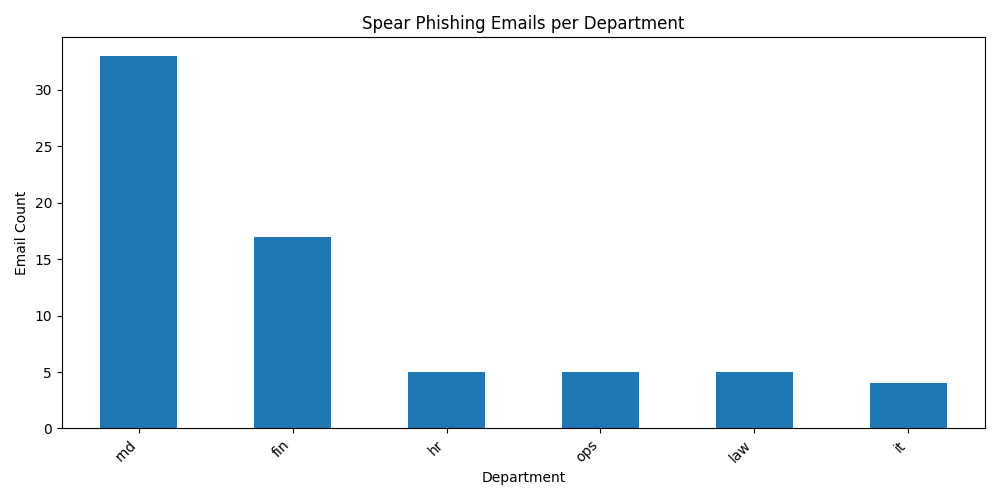
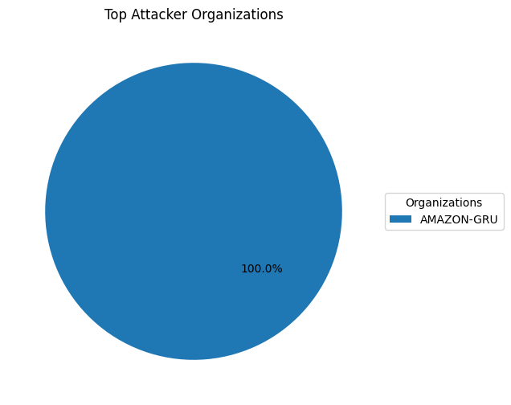
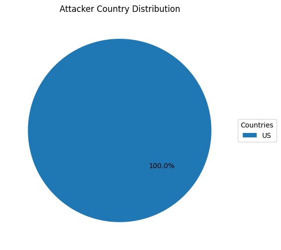

CYFO INC 针对性钓鱼攻击分析报告
1. 项目背景
本项目对虚构公司 CYFO INC 的邮件系统进行全面分析，识别针对员工的钓鱼攻击行为，并提取攻击者来源信息。
2. 数据处理流程
- 数据提取： 使用 parser.py 解析 .eml 文件，提取发件人、收件人、IP、正文等结构化字段。
- 数据清洗： 清洗邮箱格式、解析时间戳、标准化 MIME 类型。
- 建模分析： 使用 pandas/sqlite3 进行建模与统计分析。
- 可视化与报告： 生成可视化图表，输出 Markdown 报告或 HTML 页面。
3. 钓鱼目标识别
通过匹配收件人与员工邮箱，成功识别出 69 封针对 CYFO 员工的钓鱼邮件。

4. 攻击来源分析
通过提取邮件头部最早的 IP，并使用 WHOIS 查询所属组织与国家，生成如下统计：


5. 分析结论与建议
- 加强对 IT、HR 等高风险部门的安全培训
- 部署 SPF/DKIM/DMARC 策略加强邮件防护
- 将攻击 IP 纳入防火墙/告警系统
- 建立邮件取证自动化工具链用于后续分析
6. 项目输出
- 结构化邮件数据：
cleaned_emails.json
- 员工资料：
employees.csv
- 分析图表：柱状图、饼图共 3 张
- 最终报告：
spear_report.md 或导出的 PDF